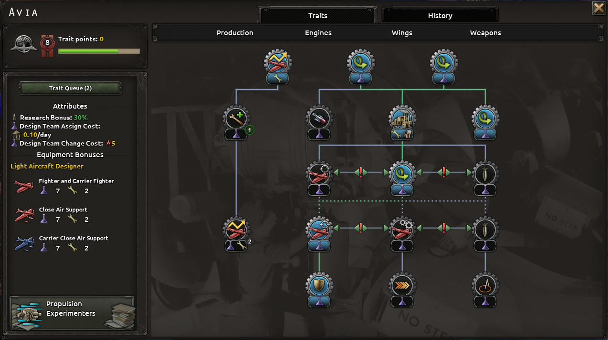
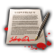
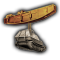
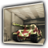
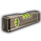
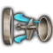

军工组织
原页面：Military industrial organization
军事工业组织 (MIOs) are a feature in the  反抗暴政 expansion, replacing the base game 设计公司. They can be used to 科研 technologies faster, confer bonuses onto equipment, and increase the output of a 生产 line. MIOs increase in size, or "level up", over the course of a game, allowing them to unlock new player-selected bonuses from a trait tree and eventually make use of player-selected MIO policies that can confer additional bonuses. MIOs broadly follow the same categories as the 设计公司 present in the base game, with designers of the same type sharing the same basic trait trees. However, as opposed to 设计公司, multiple MIOs of the same category can be used at the same time, allowing players a lot more flexibility in terms of what they specialize in compared to needing to lock into using just one design company for each equipment type (tanks, navy, planes, materiel).
反抗暴政 expansion, replacing the base game 设计公司. They can be used to 科研 technologies faster, confer bonuses onto equipment, and increase the output of a 生产 line. MIOs increase in size, or "level up", over the course of a game, allowing them to unlock new player-selected bonuses from a trait tree and eventually make use of player-selected MIO policies that can confer additional bonuses. MIOs broadly follow the same categories as the 设计公司 present in the base game, with designers of the same type sharing the same basic trait trees. However, as opposed to 设计公司, multiple MIOs of the same category can be used at the same time, allowing players a lot more flexibility in terms of what they specialize in compared to needing to lock into using just one design company for each equipment type (tanks, navy, planes, materiel).
工业财团 remain unchanged.
游戏机制

Each country starts with a set of military industrial organizations (MIOs) that each specialize in different types of equipment. Countries can opt to use these MIOs to help design and/or produce equipment tied to their speciality, as well as to help 科研 technologies related to their speciality. Each of these tasks accrues funds in the MIO that help increase its size, unlocking additional bonuses.
Bonuses and costs
When assigned to a production line, a MIO can confer 生产 bonuses to the line through its 特质 and/or policies when they are available. Even when no such bonuses are available, being assigned to a production line still help the MIO acquire funds. Assigning a MIO to a production line costs the country 0[1]  政治点数 per day.
政治点数 per day.
When assigned to 科研 a technology, a MIO can confer a  科研速度 bonus at the cost of
科研速度 bonus at the cost of  政治点数. The base research bonus is +5%[2], but is often higher thanks to MIOs' starting 特质 and can be increased further through unlockable 特质和policies for each MIO, as well as potentially also by various 政治顾问和国策. Assigning a MIO to research a technology costs the country 0.1[3]
政治点数. The base research bonus is +5%[2], but is often higher thanks to MIOs' starting 特质 and can be increased further through unlockable 特质和policies for each MIO, as well as potentially also by various 政治顾问和国策. Assigning a MIO to research a technology costs the country 0.1[3]  政治点数 per day, but only while the technology is actively being researched. Changing the MIO assigned to research a technology, including unassigning one, costs 0
政治点数 per day, but only while the technology is actively being researched. Changing the MIO assigned to research a technology, including unassigning one, costs 0 陆军经验 for land-based technologies, 0
陆军经验 for land-based technologies, 0 海军经验 for 海军和海军支持 technologies, and 0
海军经验 for 海军和海军支持 technologies, and 0 空军经验 for air technologies.[4]
空军经验 for air technologies.[4]
When assigned as the designer of some equipment, a MIO can confer various stat bonuses (and in some cases, maluses) to said equipment based on its 特质 and/or selected policy. MIOs can be assigned to equipment 变体 or, when eligible, to  armor designs,
armor designs,  舰船设计, or
舰船设计, or  飞机设计. This happens automatically for any equipment unlocked from a technology that was researched using that MIO. For other technologies, or if the player wants the bonuses from a different MIO, a new variant can be created from the production screen. Adding, changing, or re-applying the MIO designer of some equipment costs 0
飞机设计. This happens automatically for any equipment unlocked from a technology that was researched using that MIO. For other technologies, or if the player wants the bonuses from a different MIO, a new variant can be created from the production screen. Adding, changing, or re-applying the MIO designer of some equipment costs 0 陆军经验 for land-based equipment and designs, 0
陆军经验 for land-based equipment and designs, 0 海军经验 for naval equipment and designs, and 0
海军经验 for naval equipment and designs, and 0 空军经验 for aircraft equipment and designs,[4] though this cost can be discounted by some unlockable MIO traits and/or 国策. Newly acquired stat bonuses from traits and policies are also not retroactively applied to existing equipment. In order to apply newly unlocked bonuses, a MIO must be re-applied as the designer of the given equipment variant (with the same
空军经验 for aircraft equipment and designs,[4] though this cost can be discounted by some unlockable MIO traits and/or 国策. Newly acquired stat bonuses from traits and policies are also not retroactively applied to existing equipment. In order to apply newly unlocked bonuses, a MIO must be re-applied as the designer of the given equipment variant (with the same 

 experience cost as when assigning a new designer), and production lines must switched over to the new variant. Any already-manufactured land- and air-based equipment must be converted to the new variant if so desired, and already-manufactured ships must be refitted to the new variant.
experience cost as when assigning a new designer), and production lines must switched over to the new variant. Any already-manufactured land- and air-based equipment must be converted to the new variant if so desired, and already-manufactured ships must be refitted to the new variant.
It can be important to note that MIOs can be assigned to 生产线 to produce equipment designed by other MIOs. For example, this can be beneficial if one MIO's 特质 are better-suited for boosting stats while another's are better for increasing 生产. Investing into two different MIOs for the same equipment this way can be more difficult (and is only even possible for countries that have multiple MIOs available for the same piece of equipment), but if the given piece of equipment is important enough to warrant this sort of dual setup, the additional effort can be worth it.
Size and funds
A MIO can gain funds from being assigned to 生产线 and/or to conducting 科研, which help it increase in 规模.
Being assigned to a production line earns the MIO 0.1[5] funds per  生产 per day, up to at most 100[6] funds per day.
生产 per day, up to at most 100[6] funds per day.
Being assigned to 科研 a technology earns the MIO 500[7] funds multiplied by the base cost of technology when the technology has been researched. A technology with a base cost of 110[8] days would earn 500 funds, one with a base cost of 165 days would earn 750 funds, one with a base cost of 99 days would earn 450 funds, etc. If progress has already been made on a technology before the MIO is assigned to it, the amount of funds gained upon completion is scaled to the percentage of the research that was done with the MIO assigned. As the amount of funds that a MIO receives depends only on the technology's base cost, not the actual time required to research it, it can be beneficial to choose to research technologies with available research speed bonuses if a player wishes to rapidly increase the size of a MIO. Naval technologies和海军支援科技 where bonuses can be acquired by spending  海军经验 can be especially potent. On the flipside, researching technologies ahead-of-time will not provide an assigned MIO more funds, so doing so can result in a lot more
海军经验 can be especially potent. On the flipside, researching technologies ahead-of-time will not provide an assigned MIO more funds, so doing so can result in a lot more  政治点数 having to be spent on the MIO's research relative to the amount of funds it will gain from performing that research.
政治点数 having to be spent on the MIO's research relative to the amount of funds it will gain from performing that research.
Various 政治顾问, 国策, and MIO traits can increase the amount of funds that a MIO gains whenever it would normally gain funds. Some 国策 also directly add funds to certain MIOs and/or directly increase their size.
A MIO's funds will slowly increase its size. The main benefit of a MIO increasing in size is that gains 1[9] additional trait point each time its size increases that can be spent on 特质. Additionally, policies unlock when a MIO reaches size 6.
The funds required to increase the size of the MIO increases with greater MIO size:[10]
: Funds Required to Increase MIO Size = 100 · (Current MIO Size + 1)^ 1.8 + 700
The amount of funds required to reach the first dozen of MIO sizes is summarized in the table below.
| MIO Size | Funds Required for Next Size Increase | Cumulative Funds Required to Reach This Size |
|---|---|---|
| 0 | 800 | 0 |
| 1 | 1048 | 800 |
| 2 | 1422 | 1848 |
| 3 | 1912 | 3270 |
| 4 | 2511 | 5182 |
| 5 | 3215 | 7693 |
| 6 | 4020 | 10908 |
| 7 | 4922 | 14928 |
| 8 | 5919 | 19850 |
| 9 | 7009 | 25769 |
| 10 | 8190 | 32778 |
| 11 | 9460 | 40968 |
| 12 | 10818 | 50428 |
Archetypes and variants
MIOs, like design companies before them, are sorted into 4 categories: Material Equipment, Planes, Ships and Tanks.
The MIOs themselfes follow certain Archetypes from which they take the most or all of their traits. Most nations have special unique traits available in their specific MIOs. In game, MIOs have a name (usually historical) and a descriptor. That descripter is, in most cases, the name of their archetype.
The following Archetypes exist:
- Material Equipment:
- 火炮制造商
- 步兵武器制造商
- 支援装备制造商
- 汽车制造商
- 装甲车设计师
- 直升机研发
- 飞机:
- 通用飞机设计师
- 轻型飞机设计商
- 中型飞机设计商
- 重型飞机设计商
- 近距离空中支援飞机设计师
- 海军飞机设计商
- 多用途飞机设计师
- 高机动性战斗机设计师
- 航程优先飞机设计师
- 舰船:
- 特遣舰队造船厂
- 战列线舰船建造者
- Escort Ship Builders
- Raiding Ship Builders
- 潜艇建造者
- 黑海舰队设计师
- 翻新修理制造商
- 坦克:
- 标准化生产
- 步兵坦克设计商
- 突击炮制造商
- 快速坦克设计师
- 中型坦克设计商
- 重型坦克设计商
- 坦克翻新厂
- Light Armored Manufacturer
Variants
Some MIOs have a descriptor that varies from the Archetype they are based from. Usually this is because they apply their traits to additional/different types of equipment.
These are:
- 步兵武器制造商：
- Small Arms Manufacturer
- 支援装备制造商：
- Ammunition and Weapons Works
- 汽车制造商：
- Fast Automotive Manufacturer
- Attack Focused Automotive Manufacturer
- 装甲车设计商：
- Minerva Imperia Armored Cars
- 轻型飞机设计商
- 标准化生产
- Robust Light Aircraft Designer
- 中型飞机设计商：
- Medium Long-Range Aircraft
- 近距空中支援机设计商：
- Army Aircraft Manufacturer
- 多用途飞机设计商：
- 飞机生产厂
- 侧重航程的飞机设计商：
- Light Long-Range Aircraft
- 特混舰队舰船建造商：
- Carrier Specialists
- 护航舰建造商：
- Merchant and Escort Ship Builders
- 袭击舰建造商：
- Carrier Focused Raiding Fleet
- Coastal Defense Production
- 潜艇建造商
- Advanced Submarine Designer
- 标准化生产：
- Dedicated Tank Factory
- 步兵坦克设计商：
- Multi Role Tank Designer
- Heavy Machinery Workshop
- 快速坦克设计商：
- Mobile Tank Destroyers
- 中型坦克设计商：
- Medium Tank Manufacturer
特质
特质 are the main source of a MIO's bonuses and modifiers.
All MIOs start with at least one trait that always confers some bonus (or penalty) to using it. Additional traits can be acquired by increasing a MIO's size, which add trait points to the MIO that can be spent on traits made available through the MIO's trait tree. Once a trait has been purchased, the purchase cannot be undone. When a MIO has at least one unspent trait point, players will receive a notification for it near the top of their screen.
The same MIO types across different countries will usually share the same starting traits and basic trait trees, but there are plenty of exceptions, especially in the form of unique unlockable MIO traits added onto a basic trait tree.
Like with 科技, traits in a MIO's trait tree can be mutually exclusive with other traits and/or have prerequisites (usually other MIO traits, but sometimes also 科技). Some country-specific traits available only to MIOs of certain countries can also have additional prerequisites, usually that certain 国策 be completed.
MIO traits in the trait tree can be queued up by shift-clicking their icons instead of clicking them (which is used to acquire those traits). When a MIO gains trait points (usually from having increased in size), it will automatically attempt to spend them on available traits in its trait queue. The current trait queue for a MIO can be viewed by clicking the trait queue button in the MIO trait tree interface. Queued traits can also be reordered through the interface made available through that button. They can also be dequeued either by clicking the X button(s) next to them in the trait queue view or by shift-clicking their icons in the trait tree.
It can sometimes be a good idea to delay acquiring certain traits, potentially indefinitely, and leave trait points unspent. Some traits can apply maluses that outweight the benefits of their bonuses, so delaying them until their maluses have come less relevant can be a wise choice. Infantry equipment MIOs can be an especially common example of this, where the fairly minor breakthrough bonuses that come from some of their traits are often not worth the more substantial production cost maluses that come with those same traits.
Policies
When a MIO reaches size 6, policies are unlocked for it. These serve as an additional source of bonuses or modifiers for a MIO that, unlike 特质, can be altered over time. Not all types of MIO have access to all types of policy, but there are some common polices that all MIOs get access to.
Assigning a new policy to a MIO costs 25[11] 政治点数. Only one policy can be active at a time per MIO, but a new one can be selected after at least 180[12] days have passed since a MIO has been assigned a policy.
政治点数. Only one policy can be active at a time per MIO, but a new one can be selected after at least 180[12] days have passed since a MIO has been assigned a policy.
Unlike 特质, policies cannot be queued up for MIOs. However, by queuing up 5 MIO traits for each of their MIOs, players can ensure that when they see a notification for them having an unspent MIO trait point, it will be for MIOs that are at least size 6, reminding them to select a policy for it as well as trait(s).
List of policies
| 图标 | Policy | 效果 | 前置条件 |
|---|---|---|---|
 |
Ruthless Contracts |
|
– |
| Assembly Line Optimisers |
| ||
| Vertical Integration |
|
– | |
| Mechanical genius |
|
– | |
| Experimental Development Team |
|
– | |
| Permanent Industrial Revolution |
|
| |
| Ordnance Factory Board |
| ||
| Armor Welding Specialists |
|
| |
| Casting Specialists |
|
| |
 |
Heavy Gantry Cranes |
| |
 |
Factory Applied Camuflage |
|
|
| Cutting Corners |
|
| |
| Welding Specialists |
|
| |
| Space Efficient Design |
|
| |
 |
Stable Gunnery Platforms |
|
|
| Great Sea Keeping |
|
| |
| Coastal Battlefleet |
|
| |
| Perfect Finnish |
|
| |
| Heavy Gantry Cranes |
| ||
| Propulsion Experimenters |
|
| |
 |
Wind Tunnel Pioneers |
|
|
| 模块化装配 |
|
|
Lists of MIOs and their traits
Armor Companies
- 主条目：Tank MIOs列表
- 主条目：Ship MIOs列表
飞机公司
- 主条目：Plane MIOs列表
物料装备公司
参考资料
- ↑
NDefines.NIndustrialOrganisation.ASSIGN_INDUSTRIAL_MANUFACTURER_PP_COST_PER_DAY = 0中的 定义文件。 - ↑
NDefines.NIndustrialOrganisation.DESIGN_TEAM_RESEARCH_BONUS = 0.05中的 定义文件。 - ↑
NDefines.NIndustrialOrganisation.ASSIGN_DESIGN_TEAM_PP_COST_PER_DAY = 0.1中的 定义文件。 - ↑ 4.0 4.1
NDefines.NIndustrialOrganisation.DESIGN_TEAM_CHANGE_XP_COST = 0中的 定义文件 - ↑
NDefines.NIndustrialOrganisation.FUNDS_FROM_MANUFACTURER_PER_IC_PER_DAY = 0.1中的 定义文件。 - ↑
NDefines.NIndustrialOrganisation.MAX_FUNDS_FROM_MANUFACTURER_PER_DAY = 100中的 定义文件。 - ↑
NDefines.NIndustrialOrganisation.FUNDS_FOR_RESEARCH_COMPLETION_PER_RESEARCH_COST = 500中的 定义文件。 - ↑
NDefines.NTechnology.BASE_TECH_COST = 110中的 定义文件。 - ↑
NDefines.NIndustrialOrganisation.UNLOCKED_TRAITS_PER_SIZE_UP = 1中的 定义文件。 - ↑
NDefines.NIndustrialOrganisation.FUNDS_FOR_SIZE_UP_LEVEL_FACTOR = 100、NDefines.NIndustrialOrganisation.FUNDS_FOR_SIZE_UP_LEVEL_POW = 1.8和NDefines.NIndustrialOrganisation.FUNDS_FOR_SIZE_UP = 700，位于定义文件 - ↑
NDefines.NIndustrialOrganisation.DEFAULT_INITIAL_POLICY_ATTACH_COST = 25中的 定义文件。 - ↑
NDefines.NIndustrialOrganisation.DEFAULT_INITIAL_ATTACH_POLICY_COOLDOWN = 180中的 定义文件。
| 政治 | 意识形态 • 阵营 • 国策 • 理念 • 政府 • 傀儡国 • 流亡政府 • 外交 • 世界紧张度 • 内战 • 占领 • 力量均势 |
| 生产 | 贸易 • 生产 • 建造 • 装备 • 燃料 • 军工组织 • 国际市场 |
| 科研与科技 | 科研 • 步兵科技 • 支援连科技 • 装甲科技（也包括 未拥有绝不后退）• 火炮科技 • 陆军学说 • 特种部队学说 • 海军科技（也包括 未拥有全民持枪）• 海军支援科技 • 海军学说 • 空军科技（也包括 未拥有以血盟誓）• 空军学说 • Engineering科技 • Industry科技 • 特殊项目 • 科学家 |
| 军事与战争 | 战争 • 和平会议 • 陆军单位 • 陆战 • 师编制设计 • 坦克设计 • 陆军编制器 • 集团军 • 指挥官 • 作战计划 • 战斗战术 • 舰船 • 舰船设计（伦敦海军条约）• 海战 • 飞机设计 • 空战 • 经验 • 军官团 • 损耗与事故 • 后勤 • 人力 • 核弹 • 突袭 |
| 间谍活动 | 情报 • 情报机构 • 特工 • 任务 • 行动 |
| 地图 | 地图 • 省份 • 地形 • 天气 • 州 |
| 事件与决议 | 事件 • 决议 |